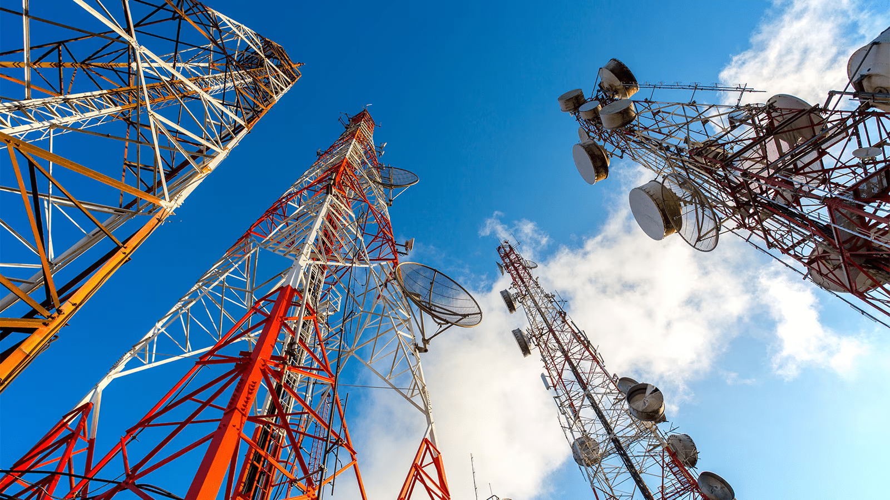

Perfil de Elevación

Perfil de elevaciónEnlaces de microondas
Un perfil de elevaciones es una herramienta utilizada para diferenciar alturas,
porcentajes de pendientes, medir segmentos de una ruta, una montaña, la cuenca de un río, etc.
Puntos seleccionados:
Punto N°1:
Latitud: {{settingsService.linkSettings.P1.lat}} - Longitud: {{settingsService.linkSettings.P1.lng}}
Punto N°2:
Latitud: {{settingsService.linkSettings.P2.lat}} - Longitud: {{settingsService.linkSettings.P2.lng}}
Altura de antenas
Altura Antena Initial
mts
Altura Antena Final
mts
Generar Gráfica
Generar gráficaProcedimiento:
1.- Selecciona los dos puntos en el mapa donde quieres graficar el
perfil de elevación.
2.- Seleccionados los puntos, presiona el botón "Generar gráfica"
para obtener mostrar el gráfico.
IMPORTANTE
Puntos de obstrucción:
Es importante que revises la configuracion del enlace, ya que existen puntos de obstruccion en
el 60% de la primera zona de fresnel, por lo que esta afectada la factilidad del radienlace.